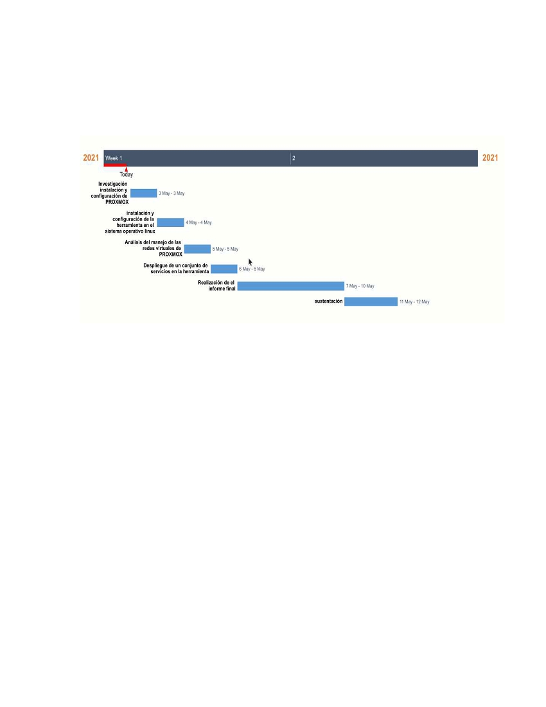
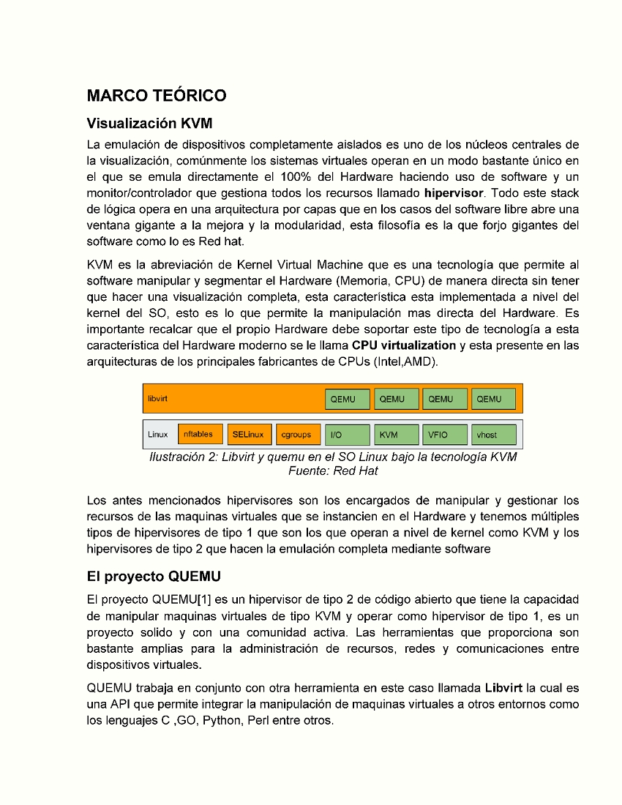
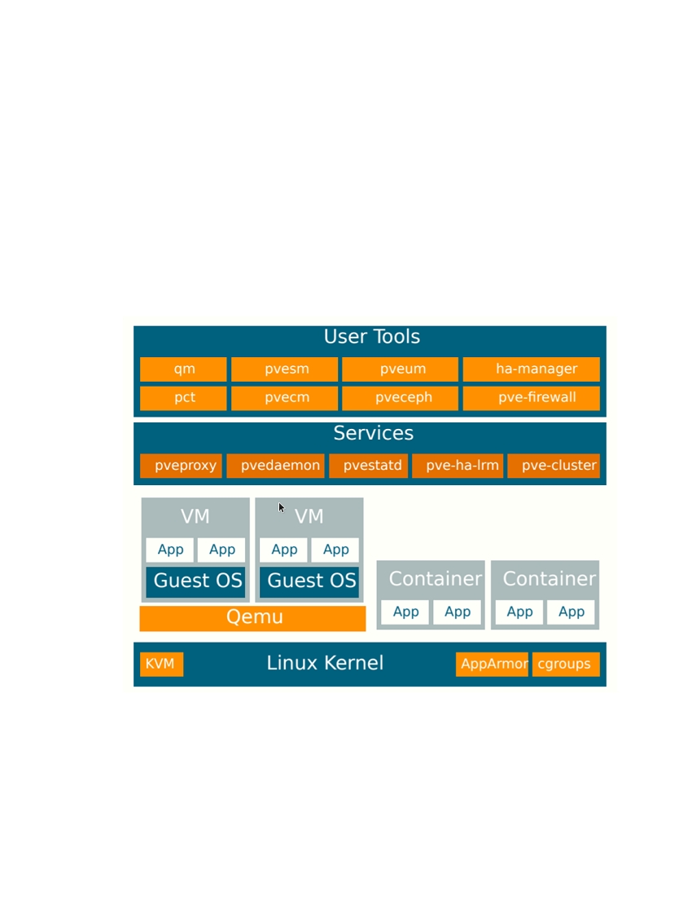
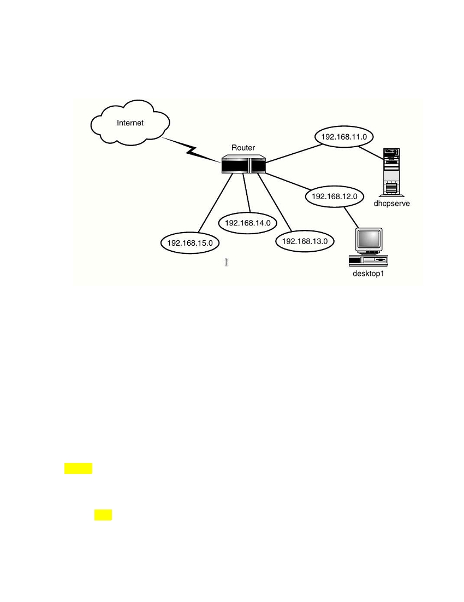
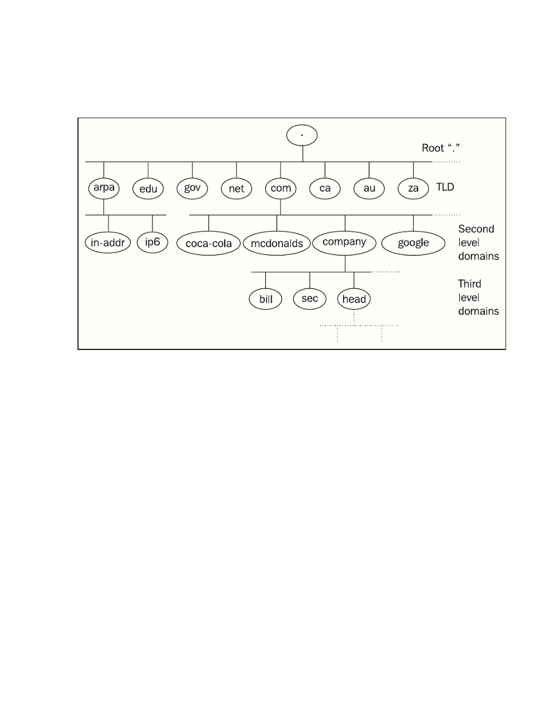
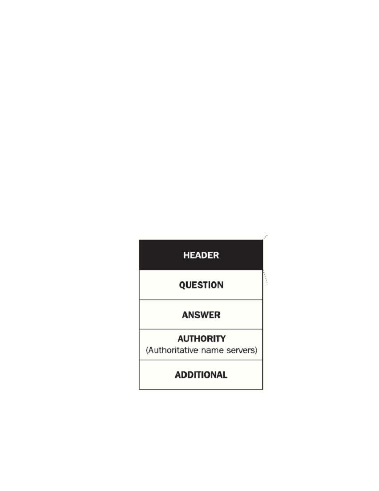

Tabla de contenido
INTRODUCCIÓN..................................................................................................................3
PLANTEAMIENTO DEL PROBLEMA ..................................................................................4
FORMULACIÓN DEL PROBLEMA ......................................................................................4
ORGANIZACIÓN DEL TRABAJO ........................................................................................5
DESCRIPCIÓN DEL PRODUCTO .......................................................................................5
DEFINICIÓN DE OBJETIVOS..............................................................................................5
Objetivo general ...............................................................................................................5
Objetivos específicos........................................................................................................5
CRONOGRAMA DEL PROYECTO......................................................................................6
MARCO TEÓRICO...............................................................................................................7
Visualización KVM............................................................................................................7
El proyecto QUEMU .........................................................................................................7
Visualización por contenedores........................................................................................8
EL proyecto LXC ..............................................................................................................8
Gestión de sistemas Linux ...............................................................................................8
PROXMOX .......................................................................................................................9
Herramientas de PROXMOX............................................................................................9
Servicio DHCP................................................................................................................10
Ventajas de DHCP.....................................................................................................11
El proceso de reclamación.........................................................................................11
Cuando no usar DHCP ..........................................................................................11
Configuración de un servidor DHCP..........................................................................11
BIBLIOGRAFÍA...................................................................................................................13
INDICE DE ILUSTRACIONES............................................................................................14

INTRODUCCIÓN
La implementación y configuración de servicios de red es una parte fundamental en los
procesos del diseño instalación y configuración de redes de cualquier categoría, por esta
razón es importante conocer de antemano las dependencias, términos y tecnologías
disponibles para los diferentes tipos de topologías de red. PROXMOX es una plataforma
de manejo de servidores virtuales que integra una herramienta web para el manejo de
maquinas virtuales(VM) y contenedores, cuenta con herramientas de manejo de red que
nos permiten hacer un monitoreo continuo de estos sistemas.

PLANTEAMIENTO DEL PROBLEMA
La visualización trajo con sigo un enorme numero de posibilidades en todas las áreas de la
computación orientadas a servicios y comunicaciones, esto incluye servicios web y por
supuesto los recientes servicios orientados a la configuración remota de las redes de
comunicaciones. Todos estos sistemas requieren de una configuración muy detallada y la
visualización se presenta como una herramienta muy solida para la instrucción de nuevos
profesionales que no tienen acceso a los medios físicos para hacer “pruebas de fuego” en
un entorno real con condiciones al nivel practico.
FORMULACIÓN DEL PROBLEMA
En relación a lo planteado anteriormente se plantea la siguiente pregunta de proyecto:
¿Cuales son los pasos a seguir para la visualización y configuración de servicios de
red en un gestor virtual como PROXMOX?
ORGANIZACIÓN DEL TRABAJO
Involucrado
Rol
Jhon Edison Rodríguez Maldonado
Investigador, desarrollador del proyecto
DESCRIPCIÓN DEL PRODUCTO
Con este proyecto se busca crear un informe con la especificación técnica de la tecnología
PROXMOX y el paso a paso para la visualización de servicios de red así como una
sustentación con una demostración técnica de el uso de la tecnología, su uso
requerimientos e instalación en el sistema operativo Linux.
DEFINICIÓN DE OBJETIVOS
Objetivo general
Realizar una investigación que involucre el análisis técnico de la tecnología de
visualización PROXMOX para conocer la hoja de ruta que se debe de seguir para la
configuración de servicios de red.
Objetivos específicos
Indagar sobre el proceso de instalación y configuración inicial del sistema de
gestión de sistemas virtuales PROXMOX.
Instalar y configurar el sistema antes especificado en el sistema operativo Linux.
Realizar un análisis desde el punto de vista del manejo de las redes de
comunicaciones de manera virtual dentro de la tecnología.
Desplegar un conjunto de servicios en la herramienta para poner en practica lo
aprendido
realizar un informe con la especificación paso a paso para la configuración y
despliegue de los servicios utilizados.

CRONOGRAMA DEL PROYECTO
Para el desarrollo del proyecto se planteo el siguiente cronograma de trabajo dentro de las
dos semanas planteadas para su desarrollo
Ilustración 1: Diagrama de gantt para la ejecución del proyecto


Este conjunto de herramientas permiten la emulación completa o parcial del sistema asi
como emulación a nivel de usuario que permite ejecutar programas para otras
distribuciones bajo la misma arquitectura.
Visualización por contenedores
Como menciona kumaran [2] el encapsulamiento en contenedores es el siguiente paso de
la virtualización mencionando a la virtualización de sistemas completa como la fa anterior y
basada en ella aparece los servicios en la nube.
Los contenedores son un modelo de encapsulamiento de servicios y sistemas de archivos
mas que un propio sistema de visualización pues en este caso se están aislando servicios
y procesos de forma individual en regiones selectas de disco, Este sistema tiene la ventaja
de que no requiere emulación de Hardware pues los procesos se ejecutan directamente
sobre el kernel del SO host.
EL proyecto LXC
LXC es el hermano mayor de un conjunto de herramientas desarrolladas y mantenidas por
la organización de contenedores de Linux en un esfuerzo por estandarizar la tecnología y
proporcionar herramientas para el mejor aprovechamiento de los recursos, LXC es el
conjunto de herramientas de bajo nivel que permite desplegar contenedores basados en el
estándar de imágenes de contenedores.
El gestor de contenedores LXC hace uso de cgroups y los namespaces propios del
sistema todo esto bajo un único kernel lo que logro permitir a la tecnología en la mas fácil
de implementar pues su activación no requería ningún parche.
LXD es el segundo hermano de la familia de los contenedores en linux y en si es la versión
mejorada de LXC pues cuenta con herramientas mas interactivas para el manejo de los
contenedores pues cuenta con un servicio y una API Rest desde la que se pueden
manejar los contenedores, cabe resaltar que su propósito no es totalmente el mismo pues
la idea de LXC es que proporción una versión solida y estable por al menos 5 años.
LXCFS es una herramienta mas avanzada y de bajo nivel que otorga mas control sobre
tecnologías de migración y manejo de los sistemas de archivos.
Gestión de sistemas Linux
La naturaleza de el software de código abierto y el SO Linux en particular agregan una
flexibilidad que a día de hoy rivaliza e incluso deja hasta en ridículo a sistemas operativos
propietarios con millones de inversión a sus espaldas en desarrollo, Esta flexibilidad
presenta una gran flexibilidad en termino de administración de sistema y su manipulación
total o parcial

PROXMOX
Tal y como menciona Proxmox VE [1] en su documentación oficial el proyecto es un
sistema de código abierto basado en los ya mencionados proyectos anteriores que
proporciona un set de herramientas muy solido para la manipulación configuración y
gestión de sistemas virtuales en sets de datos
Herramientas de PROXMOX
En resumen muy general proxmox cuenta con múltiples herramientas que hacen la
administración de VM(maquinas virtuales) basadas en KVM y LXC (anteriormente
mencionadas). La arquitectura de esta plataforma nos da un gran conjunto de
herramientas diseñadas para hacer la administración de VM mas fácil.
Ilustración 3: Arquitectura de las herramientas proporcionadas por PROXMOX

Servicio DHCP
Tal y como nos describen Droms y Ralph [2] previo a la estandarización del protocolo
TCP/IP la automatización no se tenia mucho en cuenta, pues ¿para que automatizar la
configuración de 5 maquinas, no?. Mas adelante cuando la capacidad de las topologías de
red se veía incrementada los procesos de diseño y puesta en marcha de las redes se
tornaban complejos y muy tediosos. Para solucionar este tipo de problemas se diseñaron
protocolos de configuración de red que permitieron no solo la administración de
dispositivos terminales sino posteriormente administrar también los dispositivos de red, a
este nuevo tipo de dispositivos se les empezó a llama plug and play (conectar y ya esta).
DHCP ( Dinamyc Host Configuration Protocol ) esta diseñado con el propósito de
automatizar el proceso de configuración de dispositivos que son agregados a una red, la
asignación de direcciones de red a diferencia de los proceso de configuración física de
dispositivos puede ser automatizado y para ello es que un servidor de este tipo esta
clasificado.
Pero cuales son las tareas de un servidor DHCP
1. Asignación de direcciones IP : es necesario entregar una dirección a cada
miembro de la red y que esta coincida con otras variables como la red, subred o
segmento
2. Obtener información de configuración del dispositivo: el servidor debe poder
conocer los parámetros de configuración de cada dispositivo.
3. Configurar de forma remota un dispositivo de red: Un servidor DHCP puede
configurar de forma remota características de la interfaz red de un dispositivo.
4. Mover dispositivos a otros segmentos de red : se debe permitir el cambio
(digamos que virtual) de segmento de red a un dispositivo por ejemplo si cambian a
alguien de oficina y cambia de segmento de red, debería de poder seguir viendo los
mismos sistemas de archivos compartidos con sus anteriores compañeros ¿No?.
5. Mover y agregar dispositivos a la red: debe permitir agregar o mover dispositivos
de la red.
6. Reasignar la red: en ocasiones raras pero que pueden suceder una red puede
crecer tanto que ya no puede ser de clase A porque no es suficiente el numero de
direcciones host, pues el servidor debe ser capas también de re asignar toda la de
haciendo el proceso transparente para el usuario.
7. Recuperar y mantener viejas direcciones : es deber del servidor mantener una
lista de las direcciones de host en uso y libres para facilitar el proceso de registro a
la red.

Ventajas de DHCP
DHCP cuenta con un conjunto de ventajas evidentes que son las siguientes
1. Disponibilidad para los clientes que se quieren registrar en la red
2. facilita la escalabilidad y el mantenimiento de redes de gran volumen
3. hace muy sencilla la configuración de dispositivos móviles en redes WIRELESS
El proceso de reclamación
Los clientes conectados a unn servidor DHCP pueden solicitar que se les renueve su
dirección y configuración frecuentemente, esta es una de las desventajas de este sistema
pues en ocasiones los dispositivos llegan a cambiar de dirección si permanecen inactivos
por mucho tiempo.
Otras de las desventajas son que este tipo de servicio agrega mas carga o incluso puede
requerir de un servidor dedicado
Cuando no usar DHCP
Se recomienda no usar DHCP cuando estamos hablando de la configuración entre
servidores pues cuando el servidor DHCP no esta en linea el host intuye que la red esta
fuera de servicio y deja de usarla.
Configuración de un servidor DHCP
Para poder empezar a entender como se hace la asignación de direcciones debemos de
primero conocer las políticas de asignación
1. Asignación estática: la asignación de direcciones es fija para cada dispositivo en el
segmento de red que se encuentre.
2. Asignación dinámica: en esta el servidor tiene un rango de direcciones para cada
segmento de red y el host solo pregunta por una dirección libre para usar
3. Asignación automática: la asignación inicial se hace de forma dinámica pero se
guarda como asignación fija.
4. Asignación Híbrida: en estos casos se puede configurar para que en ciertos puntos
o segmentos de la red se configure de una manera y en otros de otra.

No es ningún secreto que para la que in dispositivo pueda obtener la configuración del
servidor debe tener conexión al mismo segmento de red.
Ilustración 4: Conexión de terminal y servidor DHCP al mismo segmento de red.
Fuente: Droms, Ralph
Servicio DNS
los nombres de dominio o DNS surgieron como forma de hacer la configuración y
comunicación mediante el protocolo IP un proceso mas transparente para el usuario pues
es mas fácil recordar nombres que números, ¿no?.
Desde una perspectiva mas técnica estos son direcciones textuales que están asociados a
direcciones de red las cuales al final del día son las que comunican nuestras redes de
computadores, un dominio DNS lo podemos definir como una dirección separada por
puntos los cuales nos dividen o seccionan el dominio en subdominios y de esta manera
podemos introducirnos en el nivel de autoridad.
Dominio raíz es el nombre principal de dominio
google.com.co por ejemplo
TLD(Top level Domains) son aquellos de lado izquierdo del dominio que definen el grupo
superior)
google.com.co por ejemplo
ccTLD (Country code top level comand) es el representativo de la región geográfica
como Colombia “.co”

Kabelova y Dostalek nos ilustran de manera mas sencilla este concepto en la siguiente
imagen.
Ilustración 5: Distribución jerárquica de los dominios. Fuente: Kabelova y Dostalek
El protocolo DNS
Es muy común pensar que cuando hablamos de DNS nuestra maquina tiene una tabla con
las direcciones asociadas a todos los sitios ya visitados pero no es asi tal y como nos
explican Kabelova y Dostalek[3] DNS envuelve también su propio protocolo y servicio al
que llamamos servidor DNS el cual tiene la responsabilidad de responder a las peticiones
en búsqueda de respuestas para que se puedan ejecutar las peticiones al respectivo
protocolo porque si los dominios se mantienen homogéneos en los diferentes protocolos
de red http, https, ws, wss y muchos otros protocolos como los que son propios de las
bases de datos relacionales y no relacionales dependen de la consistencia de un dominio
raiz para poder establecer la comunicación.
Los asi denominados paquetes también son conocidos como Resource Records (RR) los
cuales contienen características como lo son:
Nombre : el nombre del dominios
Tipo : el tipo de record ()
Clase : la clase de record ()

TTL : (Time to live) tiempo de vida del recurso, pues estos se suelen guardar en
cache para máxima velocidad recordemos que la idea no es persistencia pues
estos nombres no suelen cambiar demacrado.
RDLENGTH : un conjunto de vits que especifica la longitud de la carga útil
RDATA : la carga útil del paquete.
Existen otros capos relacionados a temas de seguridad e integridad pero estos no son
demasiado necesarios.
El protocolo DNS es un protocolo que trabaja en capa de aplicación pero sus paquetes al
igual que la mayoría de protocolos que operan en esta capa son delegados a la capa de
transporte, DNS como servicio opera en el puerto 53 UDP y 53 TCP.
Peticiones y respuestas
El protocolo DNS opera de una forma muy similar a una base de datos básicamente
tenemos la ejecución de Querys o sentencias que solicitan información al servidor el cual
revisa la base de datos por un match y regresa un RR como respuesta con la información
referente al dominio, los querys DNS tiene la siguiente estructura.
Ilustración 6: Estructura de un Querry
DNS. Fuente: Kabelova y Dostalek

Actualización de DNSs
Un servidor DNS puede y prácticamente debe de permitir la actualización de dominios de
forma dinámica, es decir que cada que la relación de un dominio cambie de dirección IP el
servidor también lo haga de forma automática de esta manera el dominio siempre sera
transparente para el que lo accede.
Este proceso involucra parámetros adicionales de la cabecera del query que dictan
características como la zona horaria el tiempo y otros. A esta operación se le conoce como
operación update.
Configuración Maestro Esclavo
Para facilitar el trabajo en algunas situaciones es necesario manejar configuración maestro
esclavo de servidores, pero para que estos servidores se mantengan al día de
operaciones update de dominios el servidor maestro es el encargado d enviar estas
operaciones cuando se hace una configuración de este tipo a estas operaciones se les
conoce como notificaciones.
Servicios Web
Es muy común confundir o llamar servicios web a los sistemas bajo la www (world wide
web) pero a muy bajo nivel son las comunicaciones de protocolos de capa de aplicación
de una forma similar que los anteriormente mencionados pero en este caso bajo protocolo
HTTP y HTTPS, es decir que comúnmente es conocido un servicio web a un servicio en el
que podamos transmitir protocolo de hipertexto o paginas Html como se les conoce
comúnmente.
La estructura de comunicación de este tipo de servicios funciona de manera similar una
solicitud es realizada al servicio el cual esta escuchando en un puerto especifico del host
de red, este protocolo de comunicación cuenta con una cabecera, un cuerpo y sus
respectivos metadatos asociados a la conexión.
Este protocolo soporta varios tipos de comunicaciones como el caso de las comúnmente
usadas bajo servicios rest: GET,POST,PUT…

BIBLIOGRAFÍA
[1]
P. VE, “Main Page --- Proxmox VE 2021, [Online]. Available:
https://pve.proxmox.com/mediawiki/index.php?title=Main_Page&oldid=10977.
[2]
R. Droms and T. Lemon, The DHCP Handbook , 2nd ed. Indianapolis, IN: Sams
Publishing, 2002.
[3]
A. Kabelova and L. Dostalek, DNS in Action . Birmingham, England: Packt
Publishing, 2010.
I NDICE DE ILUSTRACIONES
Ilustración 1: Diagrama de gantt para la ejecución del proyecto...........................................6
Ilustración 2: Libvirt y quemu en el SO Linux bajo la tecnología KVM Fuente: Red Hat.......7
Ilustración 3: Arquitectura de las herramientas proporcionadas por PROXMOX..................9
Ilustración 4: Conexión de terminal y servidor DHCP al mismo segmento de red. Fuente:
Droms, Ralph.......................................................................................................................12
Ilustración 5: Distribución jerárquica de los dominios. Fuente: Kabelova y Dostalek..........13
Ilustración 6: Estructura de un Querry DNS. Fuente: Kabelova y Dostalek ........................14